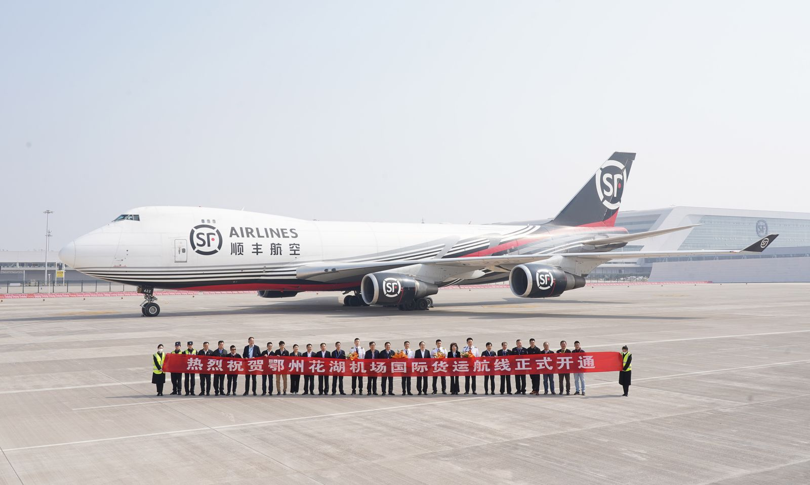
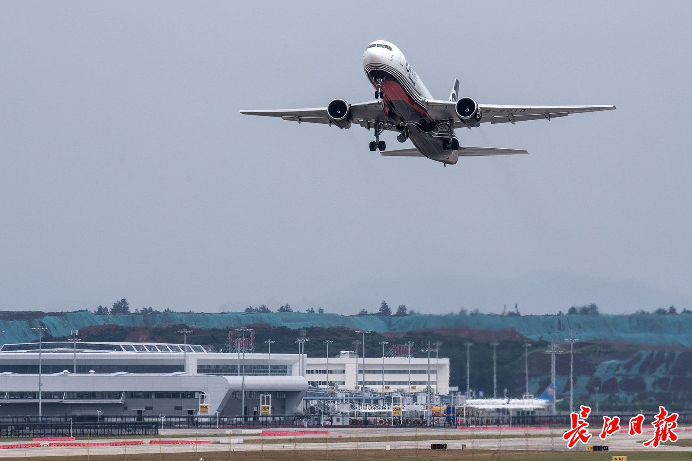

其四 · 经济与产业转型
从钢城到空港
十年前，鄂州的标签是鄂钢、建材、金刚石工具。今天凌晨四点最亮的地方，是花湖机场的停机坪。这不是换了一个产业，而是换了一套城市逻辑：过去靠江，现在靠跑道。

2025 年，几个能说明问题的数字
| 指标 | 2025 年 | 同比变化 |
|---|---|---|
| 地区生产总值 | 1416.02 亿元 | 增长 6.7% |
| 三次产业结构（一 / 二 / 三） | 7.9 : 41.4 : 50.7 | 三产首次过半（上年 48.9） |
| 规模以上工业增加值 | — | 增长 7.5% |
| 进出口总额 | 406.6 亿元 | 增长 414.6% |
| 出口额 | 363.0 亿元 | 增长 641.6% |
| 旅游总收入 | 110.58 亿元 | 增长 17.60% |
| 航空货邮吞吐量 | 114.57 万吨 | 增长 32.4% |
数据来源：鄂州市统计局《2025 年鄂州市国民经济和社会发展统计公报》（2026 年发布），为统计快报数。
数字背后的顺序
一个内陆城市要「出海」，通常先修港口，或者等沿海的货转过来。鄂州走了另一条路：把货运机场修在自家城北，然后围绕跑道重建产业。
2025 年，第三产业占比第一次超过一半，到 50.7%。拉动它的不是传统的商贸，而是航空物流、跨境电商和旅游——这一年全市接待游客 1532.85 万人次，旅游收入 110.58 亿元，都比上年涨了近两成。
第二产业占比降到 41.4%，但规上工业增加值仍增长 7.5%。钢还在炼，只是不再是唯一的答案。
一座机场，改了这座城的时钟
凌晨一点到两点进港，三点到五点离港。全货机在鄂州落地到再起飞，停留不超过四个小时。

枢纽是怎么长出来的
2022 年 7 月 17 日投运时，它被写成「亚洲第一个专业货运枢纽」。四年之后：累计开通货运航线 122 条，其中国际航线 59 条，覆盖五大洲 170 多个国家和地区；投运以来累计货邮吞吐量突破 370 万吨。
2025 年，这里的航空货邮吞吐量是 114.57 万吨，全球第 26 位；32.4% 的增速是全球第一，而同年全球平均只有 2.9%。
更直观的是节奏：凌晨一点到两点是进港高峰，三点到五点离港高峰，飞机一波波来、一波波走，天亮前，货已经到了下一座城市。
四年，几个节点
| 时间 | 事件 |
|---|---|
| 2022 年 7 月 | 花湖机场投运，首架全货机飞往深圳 |
| 2023 年 4 月 | 首条国际货运航线开通：鄂州—比利时列日，B747 载货约 105 吨 |
| 2024 年 6 月 | 北区 1 号公共国际货站投用，首年保障航班超 4500 架次 |
| 2025 年 4 月 | 中国（鄂州）跨境电子商务综合试验区获国务院批复 |
| 2026 年 | 目标货邮量突破 170 万吨；机场铁路联络线、燕矶港、综保区同步推进 |
数据来源：鄂州市 2026 年政府工作报告、鄂州市临空经济区管委会公开报道。
货落地之后，留在哪儿
只把货送出去，城市赚的是一笔过路费。这几年鄂州补的，是「留下来」的能力：保税、加工、维修、分拨。
跑道西侧不到 100 米，有一家海鲜加工厂：北美的龙虾和帝王蟹搭包机直达，落地两小时内进厂暂养；东航冷链的三文鱼加工厂从动工到投产只用 100 天，年加工能力约 2 万吨，九成订单次日送达。2026 年 5 月，湖北顺科航空维修承接首架进境维修的波音 767 货机，华中地区第一次具备宽体货机深度维修能力。
跨境电商是另一条曲线：2023 年全市跨境电商进出口额不足 1 亿元，2024 年突破 6 亿元，2025 年升到约 330 亿元，占外贸总额八成以上，成了拉动外贸的主引擎。
钢没有消失，
只是退到身后
鄂钢仍是这座城的工业底盘，钢铁、建材、金刚石工具也仍是传统支柱。2026 年的计划里，这些产业要「优化提升」，滚动实施工业设备更新和技术改造项目 100 个以上。
新的部分长得很快：与武汉协同招商，运营三大半导体产业园，目标是千亿级集群；对接光谷生物城，建设未来健康生物制造产业先导区；高端装备制造产业规模要突破 220 亿元；全省首个综合 AI 研究院——莲花山人工智能研究院已经投用。
2025 年，全市高新技术产业增加值 280.01 亿元，每万人发明专利拥有量 16.4 件。
2026 年是「十五五」开局之年：地区生产总值增长 6.0% 左右，货邮量突破 170 万吨，跨境电商交易额 400 亿元以上。「十五五」期间的目标，是地区生产总值突破 2100 亿元，基本建成国际一流航空货运枢纽。
我的看法
机场给鄂州带来的变化，住在城里是能感觉到的：城北的房子多了，路上外地牌照的货车多了，晚上从机场方向回来的出租车司机，会跟你聊今天飞了几个国际航点。
但也有需要时间回答的问题：货流能不能变成产业链，年轻人能不能留下来，一座百万人口的江城，能不能撑起一个全球枢纽的配套。这些不是一两年能看出来的。
我小时候觉得鄂州是「武汉旁边的小城」。现在我更愿意说：它是一座正在学着和世界打交道的江边城市——江还是那条江，只是多了一片会发光的跑道。
本页数字主要来自鄂州市统计局《2025 年鄂州市国民经济和社会发展统计公报》（统计快报数）与鄂州市 2026 年政府工作报告；航线、货站、产业园等数据来自鄂州市临空经济区管委会的公开报道。不同来源的统计时点不同，个别数字（如货运航线数量）会略有差异，引用时请以原始文件为准。